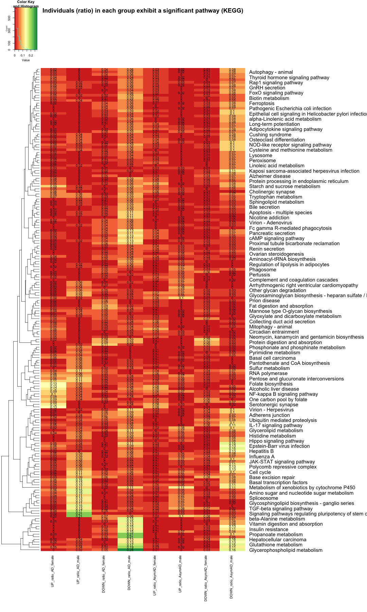
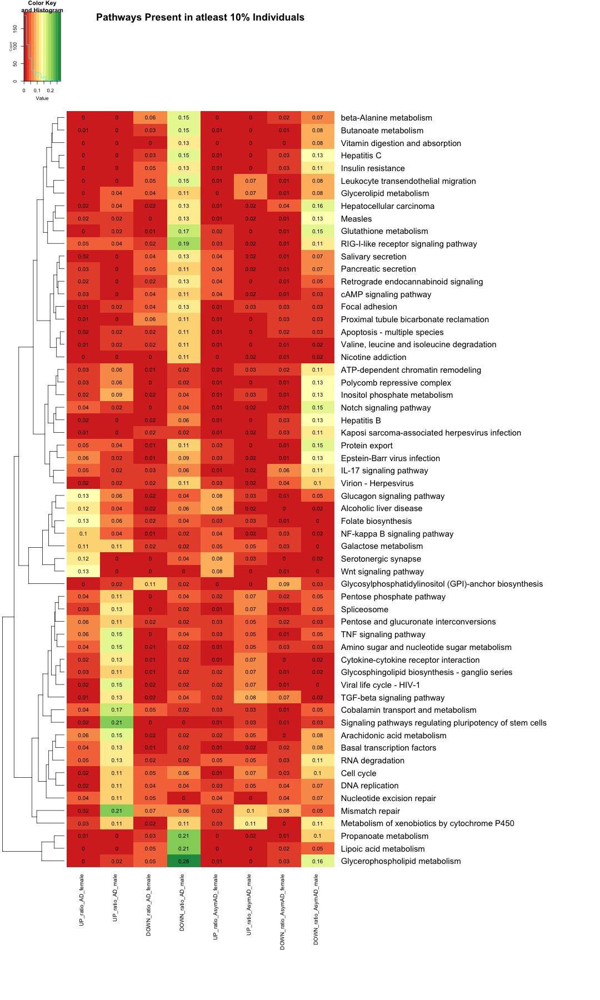
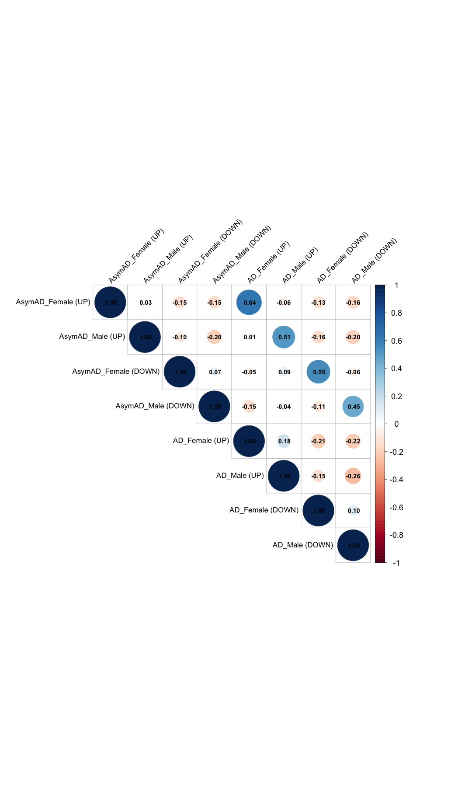
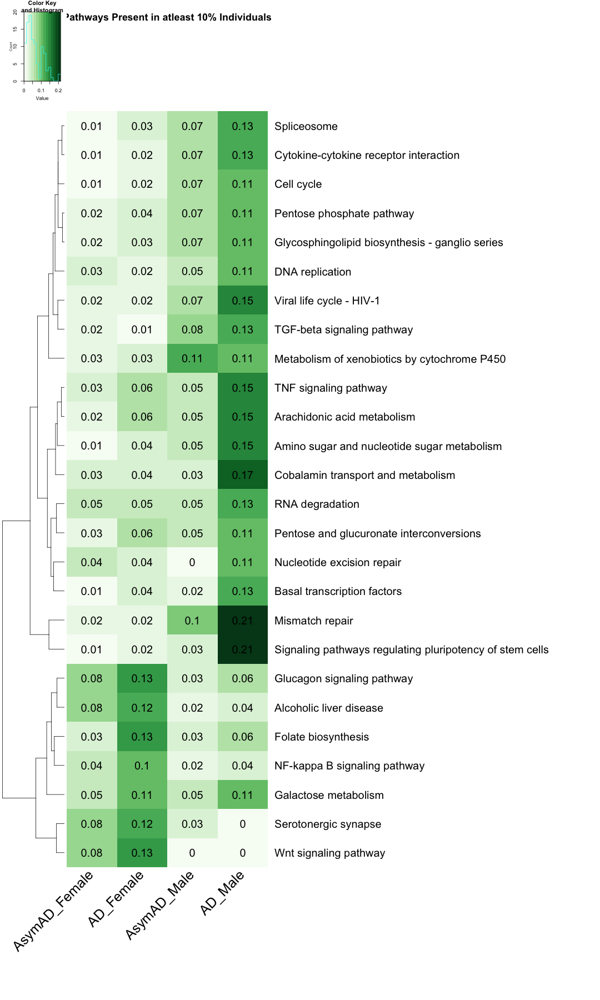
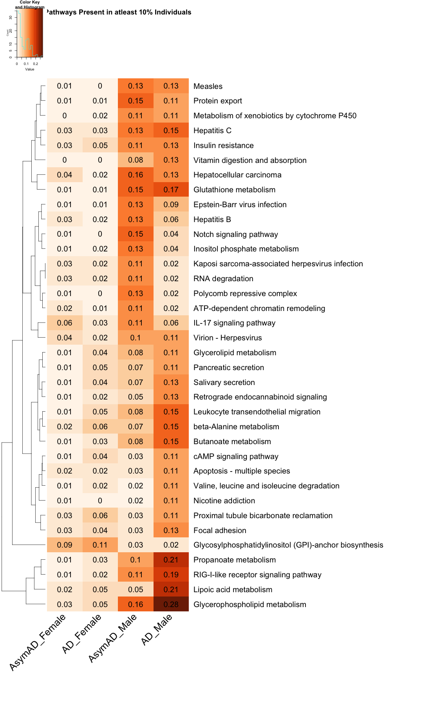

library(gplots)
library("ggplot2")
## Warning: package 'ggplot2' was built under R version 4.5.2
library(reshape2) library(RColorBrewer) library(dplyr)
library(viridis)
library(ggrepel) library(corrplot)
library(plotly)
# Open pathways comparison file #data_KEGG <- read.csv("comparative_pathway_results_proteomics_selected_KEGG.csv", sep =",", header = TRUE, stringsAsFactors = FALSE) #data_KEGG <- read.csv("comparative_pathway_results.csv", sep =",", header = TRUE, stringsAsFactors = FALSE) data_KEGG <- read.csv("comparative_pathway_results_proteomics_selected_KEGG_050525.csv", sep =",", header = TRUE, stringsAsFactors = FALSE) dim(data_KEGG)
## [1] 186 11
head(data_KEGG)
## Sno Pathway_ID Pathway_name UP_ratio_AD_female ## 1 1 hsa00010 Glycolysis / Gluconeogenesis 0.0937500 ## 2 3 hsa00030 Pentose phosphate pathway 0.0390625 ## 3 4 hsa00040 Pentose and glucuronate interconversions 0.0625000 ## 4 5 hsa00051 Fructose and mannose metabolism 0.0859375 ## 5 6 hsa00052 Galactose metabolism 0.1093750 ## 6 7 hsa00053 Ascorbate and aldarate metabolism 0.0781250 ## UP_ratio_AD_male DOWN_ratio_AD_female DOWN_ratio_AD_male ## 1 0.04255319 0.0390625 0.04255319 ## 2 0.10638298 0.0000000 0.04255319 ## 3 0.10638298 0.0234375 0.02127660 ## 4 0.08510638 0.0234375 0.04255319 ## 5 0.10638298 0.0234375 0.02127660 ## 6 0.04255319 0.0156250 0.04255319 ## UP_ratio_AsymAD_female UP_ratio_AsymAD_male DOWN_ratio_AsymAD_female ## 1 0.06289308 0.06557377 0.02515723 ## 2 0.01886793 0.06557377 0.01886793 ## 3 0.02515723 0.04918033 0.01886793 ## 4 0.03144654 0.06557377 0.01886793 ## 5 0.05031447 0.04918033 0.02515723 ## 6 0.01257862 0.01639344 0.02515723 ## DOWN_ratio_AsymAD_male ## 1 0.06557377 ## 2 0.04918033 ## 3 0.03278689 ## 4 0.03278689 ## 5 0.00000000 ## 6 0.03278689
# Distribution of Gene_ratio over the pathways #ggplot(data_KEGG, aes(x = Gene_ratio)) + #geom_histogram(binwidth = 0.05, fill = "blue", color = "black", alpha = 0.7) + #geom_text(stat='bin', binwidth=0.05, aes(label=..count..), vjust=-0.5) + #labs(title = "Histogram of Gene Ratio", x = "Gene Ratio", y = "Frequency") + #theme_minimal() + #theme(text = element_text(size = 16)) # Removing the 1st and 2nd columns #data_KEGG_new <- data_KEGG[, -c(1, 2, 4, 5, 6)] data_KEGG_new <- data_KEGG[, -c(1, 2)] head(data_KEGG_new)
## Pathway_name UP_ratio_AD_female UP_ratio_AD_male ## 1 Glycolysis / Gluconeogenesis 0.0937500 0.04255319 ## 2 Pentose phosphate pathway 0.0390625 0.10638298 ## 3 Pentose and glucuronate interconversions 0.0625000 0.10638298 ## 4 Fructose and mannose metabolism 0.0859375 0.08510638 ## 5 Galactose metabolism 0.1093750 0.10638298 ## 6 Ascorbate and aldarate metabolism 0.0781250 0.04255319 ## DOWN_ratio_AD_female DOWN_ratio_AD_male UP_ratio_AsymAD_female ## 1 0.0390625 0.04255319 0.06289308 ## 2 0.0000000 0.04255319 0.01886793 ## 3 0.0234375 0.02127660 0.02515723 ## 4 0.0234375 0.04255319 0.03144654 ## 5 0.0234375 0.02127660 0.05031447 ## 6 0.0156250 0.04255319 0.01257862 ## UP_ratio_AsymAD_male DOWN_ratio_AsymAD_female DOWN_ratio_AsymAD_male ## 1 0.06557377 0.02515723 0.06557377 ## 2 0.06557377 0.01886793 0.04918033 ## 3 0.04918033 0.01886793 0.03278689 ## 4 0.06557377 0.01886793 0.03278689 ## 5 0.04918033 0.02515723 0.00000000 ## 6 0.01639344 0.02515723 0.03278689
data_matrix_KEGG <- data_KEGG_new[, -1] # Replace NA values with 0 (or any other specific value) data_matrix_KEGG[is.na(data_matrix_KEGG)] <- 0 # Set up the color scale using RColorBrewer color_scale <- colorRampPalette(brewer.pal(9, "RdYlGn")) color_scale <- colorRampPalette(brewer.pal(9, "RdYlGn")) color_scale1 <- colorRampPalette(c("white", "lightblue", "blue", "darkblue")) color_scale2 <- colorRampPalette(brewer.pal(9, "RdGy")) color_scale3 <- colorRampPalette(brewer.pal(9, "Greens")) color_scale4 <- colorRampPalette(brewer.pal(9, "Blues")) color_scale5 <- colorRampPalette(brewer.pal(9, "Purples")) color_scale6 <- colorRampPalette(brewer.pal(9, "Oranges")) heatmap.2( as.matrix(data_matrix_KEGG), Rowv = TRUE, Colv = FALSE, col = color_scale, scale = "none", # Scale rows (genes) to Z-scores trace = "none", # Turn off row and column annotations margins = c(15, 30), # Set margins for row and column labels key = TRUE, # Include a color key keysize = .5, # Size of the color key cexCol = 1, # Set column label size cexRow = 1.5, # Set row label size cellnote=round(data_matrix_KEGG, 2), notecol="black", labRow = data_KEGG$Pathway_name, # Row labels (Pathway name) dendrogram = "row", # Show both row and column dendrograms main="Individuals (ratio) in each group exhibit a significant pathway (KEGG)" )

# subset the data where the value is equal to or greater than 0.10 in any row subset_data_KEGG <- data_KEGG_new %>% filter(UP_ratio_AD_female >= 0.10 | DOWN_ratio_AD_female >= 0.10 | UP_ratio_AD_male >= 0.10 | DOWN_ratio_AD_male >= 0.10 | UP_ratio_AsymAD_female >= 0.10 | DOWN_ratio_AsymAD_female >= 0.10 | UP_ratio_AsymAD_male >= 0.10 | DOWN_ratio_AsymAD_male >= 0.10) write.table(subset_data_KEGG,"subset_data_KEGG_atleast_10percent_ind.txt",sep="\t",quote=F) rownames(subset_data_KEGG) <- subset_data_KEGG$Pathway_name subset_data_KEGG <- subset_data_KEGG[, -1] # Replace NA values with 0 (or any other specific value) subset_data_KEGG[is.na(subset_data_KEGG)] <- 0 head(subset_data_KEGG, 3)
## UP_ratio_AD_female UP_ratio_AD_male ## Pentose phosphate pathway 0.0390625 0.106383 ## Pentose and glucuronate interconversions 0.0625000 0.106383 ## Galactose metabolism 0.1093750 0.106383 ## DOWN_ratio_AD_female ## Pentose phosphate pathway 0.0000000 ## Pentose and glucuronate interconversions 0.0234375 ## Galactose metabolism 0.0234375 ## DOWN_ratio_AD_male ## Pentose phosphate pathway 0.04255319 ## Pentose and glucuronate interconversions 0.02127660 ## Galactose metabolism 0.02127660 ## UP_ratio_AsymAD_female ## Pentose phosphate pathway 0.01886793 ## Pentose and glucuronate interconversions 0.02515723 ## Galactose metabolism 0.05031447 ## UP_ratio_AsymAD_male ## Pentose phosphate pathway 0.06557377 ## Pentose and glucuronate interconversions 0.04918033 ## Galactose metabolism 0.04918033 ## DOWN_ratio_AsymAD_female ## Pentose phosphate pathway 0.01886793 ## Pentose and glucuronate interconversions 0.01886793 ## Galactose metabolism 0.02515723 ## DOWN_ratio_AsymAD_male ## Pentose phosphate pathway 0.04918033 ## Pentose and glucuronate interconversions 0.03278689 ## Galactose metabolism 0.00000000
# Create the heatmap with filtered row names heatmap.2( as.matrix(subset_data_KEGG), Rowv = TRUE, Colv = FALSE, col = color_scale, scale = "none", trace = "none", margins = c(20, 40), key = TRUE, keysize = .5, cexCol = 1, cexRow = 1.5, cellnote=round(subset_data_KEGG, 2), notecol="black", dendrogram = "row", main = "Pathways Present in atleast 10% Individuals" )

######################################################################################################################################################################################################## # Filter data_KEGG_new where 'Pathway_name' contains the phrase 'metabolism' #data_KEGG_new_metabolism <- data_KEGG_new %>% #filter(grepl("metabolism", Pathway_name)) #dim(data_KEGG_new_metabolism) #head(data_KEGG_new_metabolism) #write.table(data_KEGG_new_metabolism,"data_KEGG_new_metabolism.txt",sep="\t",quote=F) #data_matrix_KEGG_new_metabolism <- data_KEGG_new_metabolism[, -1] # Replace NA values with 0 (or any other specific value) #data_matrix_KEGG_new_metabolism[is.na(data_matrix_KEGG_new_metabolism)] <- 0 #heatmap.2( #as.matrix(data_matrix_KEGG_new_metabolism), #Rowv = TRUE, #Colv = FALSE, #col = color_scale, #scale = "none", #trace = "none", #margins = c(20, 40), #key = TRUE, #keysize = .5, #cexCol = 1.5, #cexRow = 2, #cellnote=round(data_matrix_KEGG_new_metabolism, 2), #notecol="black", #dendrogram = "row", #labRow = data_KEGG_new_metabolism$Pathway_name, #main = "Distributions of Metablic Pathways in Each Group" #) # Filter data_KEGG_new where 'Pathway_name' contains the phrase 'metabolism' #data_KEGG_metabolism <- data_KEGG %>% #filter(grepl("metabolism", Pathway_name)) # Create the bar plot for Gene_ratio #ggplot(data_KEGG_metabolism, aes(x = Gene_ratio, y = reorder(Pathway_name, Pathway_name))) + #geom_bar(stat = "identity", fill = "steelblue") + #labs(title = "Bar Plot of Gene_ratio", #x = "Gene ratio", #y = "Pathway Name") + #theme(axis.text.x = element_text(hjust = 1, size =10), # Rotate x-axis labels #text = element_text(size = 20)) # Adjust text size ######################################################################################################################################################################################################## # Calculate the correlation matrix library(corrplot) # 1. Desired column order (AsymAD first, then AD) column_order <- c( "UP_ratio_AsymAD_female", "UP_ratio_AsymAD_male", "DOWN_ratio_AsymAD_female", "DOWN_ratio_AsymAD_male", "UP_ratio_AD_female", "UP_ratio_AD_male", "DOWN_ratio_AD_female", "DOWN_ratio_AD_male" ) # 2. Reorder the matrix data_matrix_KEGG <- data_matrix_KEGG[, column_order] # 3. Create custom labels col_labels <- c( "AsymAD_Female (UP)", "AsymAD_Male (UP)", "AsymAD_Female (DOWN)", "AsymAD_Male (DOWN)", "AD_Female (UP)", "AD_Male (UP)", "AD_Female (DOWN)", "AD_Male (DOWN)" ) # 4. Compute correlation matrix correlation_matrix <- cor(data_matrix_KEGG, use = "complete.obs") # 5. Rename both row and column names for corrplot colnames(correlation_matrix) <- col_labels rownames(correlation_matrix) <- col_labels # 6. Draw the correlation plot corrplot( correlation_matrix, method = "circle", type = "upper", tl.col = "black", tl.cex = 1.4, # Axis label font size number.cex = 1.2, # Correlation number font size addCoef.col = "black", diag = TRUE, tl.srt = 45, # Rotate labels cl.cex = 1.5 # ⬅️ Increase color bar font size )

######################################################################################################################################################################################################## # UP and DOWN Pathway Separate ploting # Removing the 1st and 2nd columns #data_KEGG_new_UP <- data_KEGG[, -c(1, 2, 4, 5, 6, 8, 10, 12, 14)] data_KEGG_new_UP <- data_KEGG[, -c(1, 2, 6, 7, 10, 11)] head(data_KEGG_new_UP)
## Pathway_name UP_ratio_AD_female UP_ratio_AD_male ## 1 Glycolysis / Gluconeogenesis 0.0937500 0.04255319 ## 2 Pentose phosphate pathway 0.0390625 0.10638298 ## 3 Pentose and glucuronate interconversions 0.0625000 0.10638298 ## 4 Fructose and mannose metabolism 0.0859375 0.08510638 ## 5 Galactose metabolism 0.1093750 0.10638298 ## 6 Ascorbate and aldarate metabolism 0.0781250 0.04255319 ## UP_ratio_AsymAD_female UP_ratio_AsymAD_male ## 1 0.06289308 0.06557377 ## 2 0.01886793 0.06557377 ## 3 0.02515723 0.04918033 ## 4 0.03144654 0.06557377 ## 5 0.05031447 0.04918033 ## 6 0.01257862 0.01639344
#data_KEGG_new_DOWN <- data_KEGG[, -c(1, 2, 4, 5, 6, 7, 9, 11, 13)] data_KEGG_new_DOWN <- data_KEGG[, -c(1, 2, 4, 5, 8, 9)] head(data_KEGG_new_DOWN)
## Pathway_name DOWN_ratio_AD_female ## 1 Glycolysis / Gluconeogenesis 0.0390625 ## 2 Pentose phosphate pathway 0.0000000 ## 3 Pentose and glucuronate interconversions 0.0234375 ## 4 Fructose and mannose metabolism 0.0234375 ## 5 Galactose metabolism 0.0234375 ## 6 Ascorbate and aldarate metabolism 0.0156250 ## DOWN_ratio_AD_male DOWN_ratio_AsymAD_female DOWN_ratio_AsymAD_male ## 1 0.04255319 0.02515723 0.06557377 ## 2 0.04255319 0.01886793 0.04918033 ## 3 0.02127660 0.01886793 0.03278689 ## 4 0.04255319 0.01886793 0.03278689 ## 5 0.02127660 0.02515723 0.00000000 ## 6 0.04255319 0.02515723 0.03278689
data_matrix_KEGG_UP <- data_KEGG_new_UP[, -1] data_matrix_KEGG_DOWN <- data_KEGG_new_DOWN[, -1] # Reorder the columns data_matrix_KEGG_UP <- data_matrix_KEGG_UP[, c( "UP_ratio_AsymAD_female", "UP_ratio_AD_female", "UP_ratio_AsymAD_male", "UP_ratio_AD_male" )] data_matrix_KEGG_DOWN <- data_matrix_KEGG_DOWN[, c( "DOWN_ratio_AsymAD_female", "DOWN_ratio_AD_female", "DOWN_ratio_AsymAD_male", "DOWN_ratio_AD_male" )] # Assign custom column names colnames(data_matrix_KEGG_UP) <- c("AD_Female", "AsymAD_Female", "AD_Male", "AsymAD_Male") colnames(data_matrix_KEGG_DOWN) <- c("AD_Female", "AsymAD_Female", "AD_Male", "AsymAD_Male") # Replace NA values with 0 (or any other specific value) data_matrix_KEGG_UP[is.na(data_matrix_KEGG_UP)] <- 0 data_matrix_KEGG_DOWN[is.na(data_matrix_KEGG_DOWN)] <- 0 # Set up the color scale using RColorBrewer color_scale <- colorRampPalette(brewer.pal(9, "RdYlGn")) heatmap.2( as.matrix(data_matrix_KEGG_UP), Rowv = TRUE, Colv = FALSE, col = color_scale3, scale = "none", # Scale rows (genes) to Z-scores trace = "none", # Turn off row and column annotations margins = c(20, 40), # Set margins for row and column labels key = TRUE, # Include a color key keysize = .5, # Size of the color key cexCol = 1.5, # Set column label size cexRow = 1.5, # Set row label size cellnote=round(data_matrix_KEGG_UP, 2), notecol="black", labRow = data_KEGG$Pathway_name, # Row labels (Pathway name) dendrogram = "row", # Show both row and column dendrograms main="Individuals (ratio) in each group exhibit a significant pathway (KEGG)" )

heatmap.2( as.matrix(data_matrix_KEGG_DOWN), Rowv = TRUE, Colv = FALSE, col = color_scale6, scale = "none", # Scale rows (genes) to Z-scores trace = "none", # Turn off row and column annotations margins = c(20, 40), # Set margins for row and column labels key = TRUE, # Include a color key keysize = .5, # Size of the color key cexCol = 1.5, # Set column label size cexRow = 1.5, # Set row label size cellnote=round(data_matrix_KEGG_DOWN, 2), notecol="black", labRow = data_KEGG$Pathway_name, # Row labels (Pathway name) dendrogram = "row", # Show both row and column dendrograms main="Individuals (ratio) in each group exhibit a significant pathway (KEGG)" )

################################################################################################################################################## subset_data_KEGG_UP <- data_KEGG_new_UP %>% filter(UP_ratio_AD_female >= 0.10 | UP_ratio_AD_male >= 0.10 | UP_ratio_AsymAD_female >= 0.10 | UP_ratio_AsymAD_male >= 0.10) subset_data_KEGG_DOWN <- data_KEGG_new_DOWN %>% filter(DOWN_ratio_AD_female >= 0.10 | DOWN_ratio_AD_male >= 0.10 | DOWN_ratio_AsymAD_female >= 0.10 | DOWN_ratio_AsymAD_male >= 0.10) rownames(subset_data_KEGG_UP) <- subset_data_KEGG_UP$Pathway_name rownames(subset_data_KEGG_DOWN) <- subset_data_KEGG_DOWN$Pathway_name subset_data_KEGG_UP <- subset_data_KEGG_UP[, -1] subset_data_KEGG_DOWN <- subset_data_KEGG_DOWN[, -1] # Replace NA values with 0 (or any other specific value) subset_data_KEGG_UP[is.na(subset_data_KEGG_UP)] <- 0 subset_data_KEGG_DOWN[is.na(subset_data_KEGG_DOWN)] <- 0 head(subset_data_KEGG_UP, 3)
## UP_ratio_AD_female UP_ratio_AD_male ## Pentose phosphate pathway 0.0390625 0.106383 ## Pentose and glucuronate interconversions 0.0625000 0.106383 ## Galactose metabolism 0.1093750 0.106383 ## UP_ratio_AsymAD_female ## Pentose phosphate pathway 0.01886793 ## Pentose and glucuronate interconversions 0.02515723 ## Galactose metabolism 0.05031447 ## UP_ratio_AsymAD_male ## Pentose phosphate pathway 0.06557377 ## Pentose and glucuronate interconversions 0.04918033 ## Galactose metabolism 0.04918033
head(subset_data_KEGG_DOWN, 3)
## DOWN_ratio_AD_female ## Valine, leucine and isoleucine degradation 0.0234375 ## beta-Alanine metabolism 0.0625000 ## Glutathione metabolism 0.0078125 ## DOWN_ratio_AD_male ## Valine, leucine and isoleucine degradation 0.1063830 ## beta-Alanine metabolism 0.1489362 ## Glutathione metabolism 0.1702128 ## DOWN_ratio_AsymAD_female ## Valine, leucine and isoleucine degradation 0.006289308 ## beta-Alanine metabolism 0.018867925 ## Glutathione metabolism 0.012578616 ## DOWN_ratio_AsymAD_male ## Valine, leucine and isoleucine degradation 0.01639344 ## beta-Alanine metabolism 0.06557377 ## Glutathione metabolism 0.14754098
# Reorder the columns subset_data_KEGG_UP <- subset_data_KEGG_UP[, c( "UP_ratio_AsymAD_female", "UP_ratio_AD_female", "UP_ratio_AsymAD_male", "UP_ratio_AD_male" )] subset_data_KEGG_DOWN <- subset_data_KEGG_DOWN[, c( "DOWN_ratio_AsymAD_female", "DOWN_ratio_AD_female", "DOWN_ratio_AsymAD_male", "DOWN_ratio_AD_male" )] # Assign custom column names colnames(subset_data_KEGG_UP) <- c("AsymAD_Female", "AD_Female", "AsymAD_Male", "AD_Male") colnames(subset_data_KEGG_DOWN) <- c("AsymAD_Female", "AD_Female", "AsymAD_Male", "AD_Male") # Create the heatmap with filtered row names UP <- heatmap.2( as.matrix(subset_data_KEGG_UP), Rowv = TRUE, Colv = FALSE, col = color_scale3, scale = "none", trace = "none", margins = c(20, 50), key = TRUE, keysize = .50, cexCol = 2.5, srtCol = 45, cexRow = 2, cellnote=round(subset_data_KEGG_UP, 2), notecex=2, notecol="black", dendrogram = "row", main = "Pathways Present in atleast 10% Individuals" )

# Create the heatmap with filtered row names DOWN <- heatmap.2( as.matrix(subset_data_KEGG_DOWN), Rowv = TRUE, Colv = FALSE, col = color_scale6, scale = "none", trace = "none", margins = c(20, 50), key = TRUE, keysize = .50, cexCol = 2.5, srtCol = 45, cexRow = 2, cellnote=round(subset_data_KEGG_DOWN, 2), notecex=2, notecol="black", dendrogram = "row", main = "Pathways Present in atleast 10% Individuals" )
